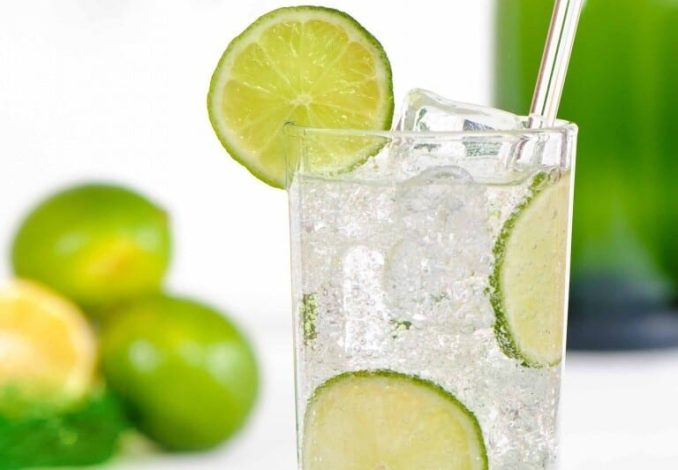
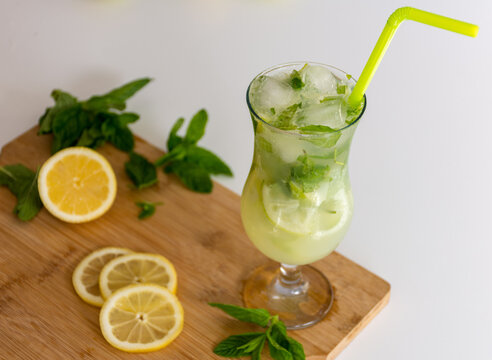
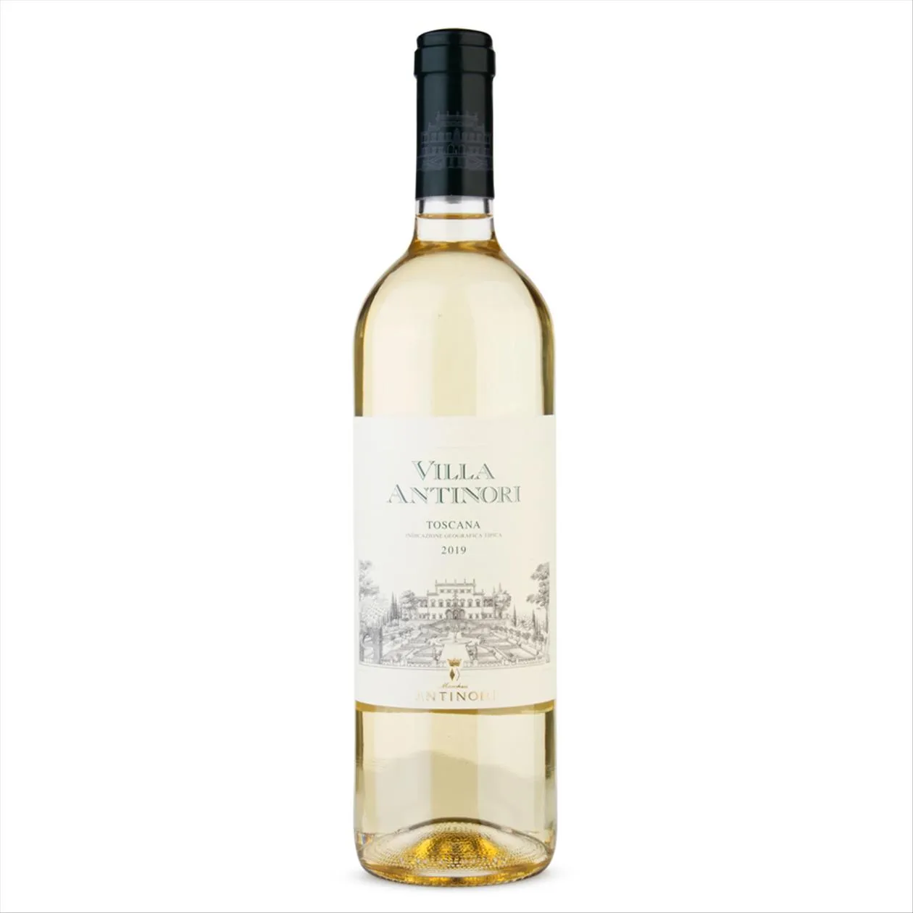

Cardápio
Antipasti - Entradas
-
Bruschetta
Fatias de pão rústico tostadas, regadas com azeite extravirgem e finalizadas com tomates frescos picados, manjericão e um toque de alho.
-
Focaccia
Pão artesanal de massa leve e aerada, temperado com alecrim fresco e sal grosso, ideal para compartilhar.
-
Arancino
Tradicionais bolinhos de arroz sicilianos, recheados com ragu e queijo, fritos até atingirem uma crocância dourada perfeita


Primi Piatti - Pratos Principais
-
Espaguete à Carbonara
O clássico romano preparado com ovos frescos, queijo pecorino, guanciale crocante e pimenta-do-reino moída na hora.
-
Ravioli
Massa artesanal recheada, servida com um molho delicado que realça o sabor do recheio feito na casa.
-
Fettuccine
Fitas largas de massa fresca que absorvem perfeitamente o molho, proporcionando uma experiência rica em sabor e textura.
-
Lasanha
Camadas intercaladas de massa fresca, molho bolonhesa apurado por horas, bechamel cremoso e muito queijo gratinado.
-
Risoto
Arroz arbóreo de textura cremosa e amanteigada, preparado lentamente com caldo artesanal e ingredientes sazonais.


Le Pizze - Pizzas
-
Margherita
A essência da Itália: molho de tomate pelado, mozzarella de búfala artesanal, manjericão fresco e um fio de azeite extravirgem.
-

Marinara
A simplicidade clássica de Nápoles, levando apenas molho de tomate, alho fatiado, orégano e azeite de oliva.
-
Prosciutto e Funghi
Uma combinação equilibrada de mozzarella, presunto cozido de alta qualidade e cogumelos frescos fatiados.
-

Quattro Stagioni
O sabor das quatro estações dividido em quadrantes: alcachofras, azeitonas pretas, presunto e cogumelos sobre base de tomate e queijo.
-
Quattro Formaggi
Para os amantes de queijo: uma seleção harmônica de mozzarella, gorgonzola cremoso, parmesão e queijo pecorino.
-
Vegetariana
Uma explosão de cores com legumes da estação grelhados, como abobrinha, berinjela e pimentões, sobre base de mozzarella.
-

Frutti di Mare
O frescor do mar em sua mesa, com uma seleção de frutos do mar salteados, alho e salsa sobre base de molho de tomate.


Bevande Analcoliche - Bebidas sem Álcool
-

Acqua Naturale o Frizzante
Água mineral puríssima, com ou sem gás, servida com uma rodela de limão siciliano.
-

Aranciata
Soda artesanal de laranja feita com suco natural de frutas cítricas colhidas no sol da Itália.
-

Limonata al Basílico
Limonada refrescante com limão siciliano e um toque aromático de manjericão fresco.
-
Succo di Frutta
Sucos naturais da estação, preparados na hora e sem conservantes.
Cocktail e Vini - Coquetéis e Vinho
-
Aperol Spritz
O icônico drink alaranjado que combina Aperol, Prosecco, água gaseificada e uma fatia de laranja.
-
Negroni
Um clássico robusto composto por partes iguais de Gin, Vermute tinto e Campari, finalizado com casca de laranja.
-

Vinho della Casa (Rosso o Bianco)
Seleção exclusiva de vinhos da casa, servidos em taça ou decanter para harmonizar com sua massa.
-

Limoncello Spritz
Uma variante refrescante do spritz, utilizando o tradicional licor de limão siciliano e espumante.
-

Birra Artingianale
Cervejas artesanais selecionadas, com notas que variam entre o malte leve e o amargor equilibrado do lúpulo.